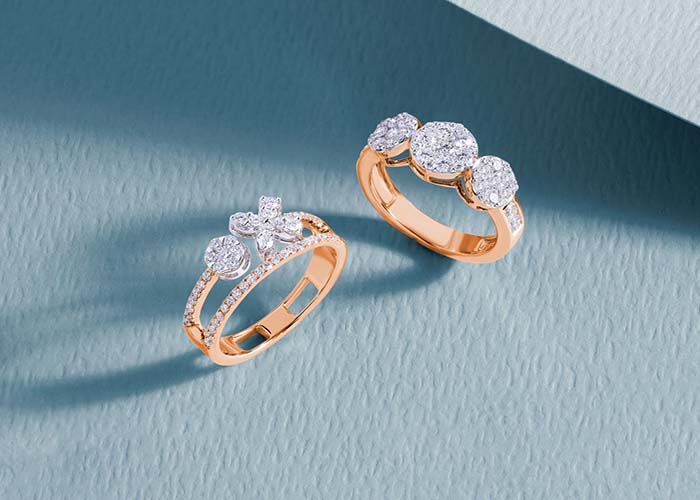
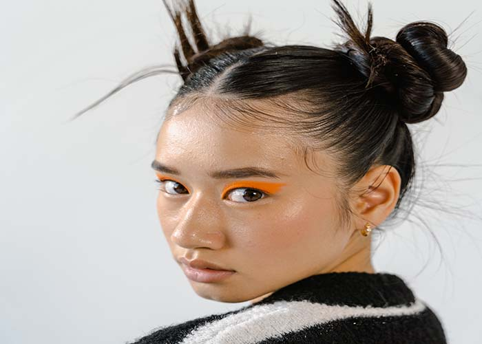
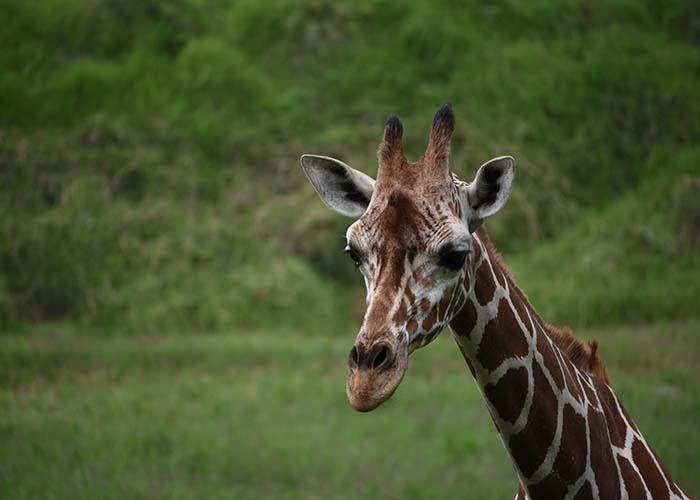
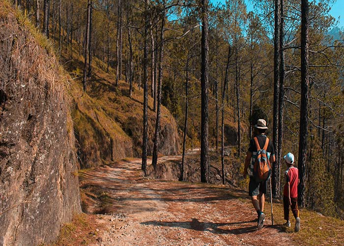
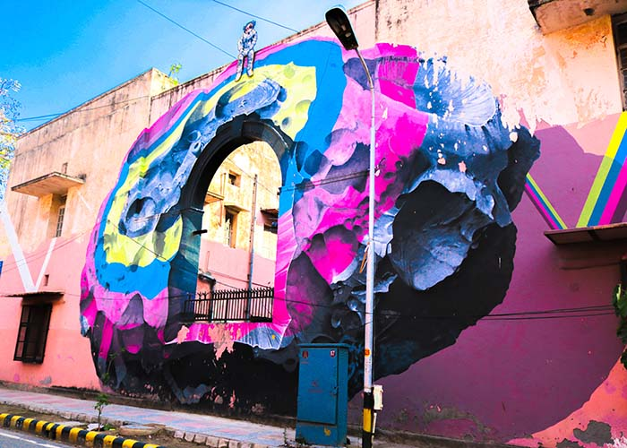
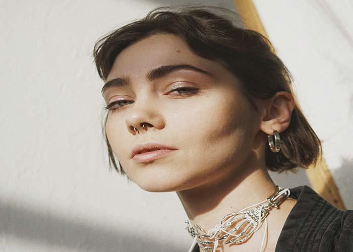

¿Qué es la fotografía?
Se llama fotografía a una técnica y a una forma de arte que consisten en capturar imágenes empleando para ello la luz, proyectándola y fijándola en forma de imágenes sobre un medio sensible (físico o digital).
Fotografía publicitaria: La que alimenta la publicidad o el marketing, o sea, la promoción de bienes y servicios de consumo. Usualmente se la interviene digitalmente y se le hacen “correcciones” para hacerla más seductora.
Fotografía de modas: Se toma en desfiles y eventos de moda, para mostrar prendas de vestir, peinados, maquillaje, etc. Va de la mano con la publicitaria, pero no suele hacérsele intervenciones digitales.
Fotografía documental: Llamada también histórica o periodística, pues se hace con fines informativos, de reportaje, de valor histórico o de denuncia.
Fotografía paisajística: Se toma para reproducir la belleza natural de un paisaje, ya sea una tomas aérea, terrestre o submarina. Suelen ser abiertas y de mucho color.
Fotografía científica: Se toma a través de telescopios, microscopios y otras herramientas científicas, con el fin de mostrar lo que comúnmente no se puede a simple vista.
Fotografía artística: La que se toma con propósitos estéticos o experimentales, como montajes, composiciones, etc.
Fotografía de retrato: Equivalente a la pintura de retratos de épocas pasadas, tiene el propósito de mostrar a alguien querido, o célebre, o hermoso, en algún momento determinado de su vida.
Por si te interesa más acerca de la fotografía: